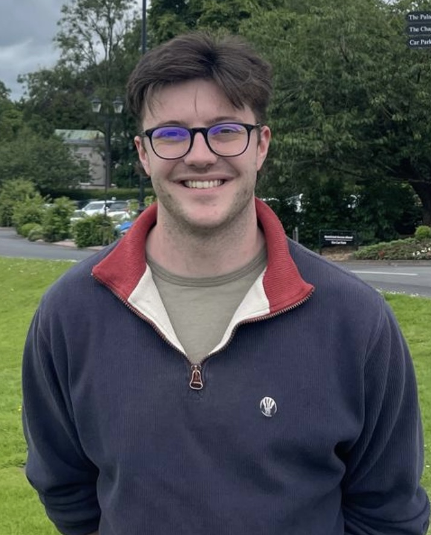
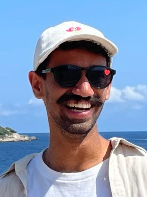

Algorithms and Complexity
| |
Welcome to the website of the Algorithms and Complexity research group at the University of Bristol.
Our Research Interests. Our current research focusses on:
- String Algorithms (Raphaël Clifford)
- Algorithmic theory for processing massive data sets, streaming algorithms, communication complexity, theory of distributed computing (Christian Konrad)
- Counting complexity, parameterised complexity, random algorithms, random processes on networks, graph theory (John Lapinskas)
- Computational Complexity (Shuo Pang)
News
| December 2025 | Paper "Unit Interval Selection in Random Order Streams" (by Cezar-Mihail Alexandru, Adithya Diddapur, Magnús M. Halldórsson, Christian Konrad, Kheeran Naidu) accepted at STACS 2026! |
| October 2025 | Paper "Lower Bounds for CSP Hierarchies Through Ideal Reduction" (by Jonas Conneryd, Yassine Ghannane, Shuo Pang) accepted at SODA 2026! |
| October 2025 | Paper "Semi-Robust Communication Complexity of Maximum Matching" (by Gabriel Cipriani Huete, Adithya Diddapur, Pavel Dvorak, Christian Konrad) accepted at SOSA 2026! |
| September 2025 | Christian will serve on the Programme Committee of SWAT 2026 and STOC 2026! |
| June 2025 | Paper "Constructing Long Paths in Graph Streams" (by Christian Konrad and Chhaya Trehan) accepted at ESA 2025! |
| May 2025 | Congratulations to Cezar for passing his PhD viva! Thanks to Magnus and Daniel for acting as external examiners, and to Meng Wang as independent chair!  |
| May 2025 | We welcome Shuo Pang who joined our group as a new Lecturer in Algorithms in Complexity! |
| April 2025 | Paper "Maximal Matching in Bounded-Deletion Streams" (by Sanjeev Khanna, Christian Konrad, Jacques Dark) accepted at ICALP 2025! |
| January 2025 | Conor presenting the paper "Graph Reconstruction via MIS Queries" at ITCS 2025! |
| November 2024 | Paper "Graph Reconstruction via MIS Queries" (by Christian Konrad, Conor O'Sullivan, Victor Traistaru) accepted at ITCS 2025! |
| October 2024 | Paper "Settling the Pass Complexity of Approximate Matchings in Dynamic Graph Streams" (by Sepehr Assadi, Soheil Behnezhad, Christian Konrad, Kheeran Naidu, Janani Sundaresan) accepted at SODA 2025! See here for a preprint. |
| September 2024 | Paper "Matchings in Low-Arboricity Graphs in the Dynamic Graph Stream Model" (by Christian Konrad, Andrew McGregor, Rik Sengupta and Cuong Than) accepted at FSTTCS 2024! A pre-print will be shared soon. |
| September 2024 | We welcome the new PhD students Archie Walton and Conor O'Sullivan to the team! |
| June 2024 | Paper "Interval Selection in Sliding Windows" (by Cezar-Mihail Alexandru, Christian Konrad) accepted at ESA 2024! Click here for a pre-print. Cezar will present the paper at the conference. |
| June 2024 | We recently organized a joint Algo-Cryto-Programming Languages workshop for the Bristol research groups in Bath.  |
| April 2024 | Paper "Nearly optimal independence oracle algorithms for edge estimation in hypergraphs" (by Holger Dell, John Lapinskas, Kitty Meeks) accepted at ICALP 2024! See here for a pre-print. |
| February 2024 | Paper "O(log log n) Passes is Optimal for Semi-Streaming Maximal Independent Set" (by Sepehr Assadi, Christian Konrad, Kheeran Naidu, Janani Sundaresan) accepted at STOC 2024! |
| October 2023 | Paper "An Unconditional Lower Bound for Two-Pass Streaming Algorithms for Maximum Matching Approximation" (by Christian Konrad, Kheeran Naidu) accepted at SODA 2024! Kheeran will present the paper at the conference. |
| September 2023 | Paper "Interval Selection in Data Streams: Weighted Intervals and the Insertion-deletion Setting" (by Jacques Dark, Adithya Diddapur, Christian Konrad) accepted at FSTTCS 2023! Adi will present the paper at the conference. |
| May 2023 | Paper "Graph Ranking and the Cost of Sybil Defense" (by Gwendolyn Farach-Colton, Martin Farach-Colton, Leslie Goldberg, Hanna Komlos, John Lapinskas, Reut Levi, Moti Medina and Miguel Mosteiro) accepted at EC 2023! See here for a pre-print. |
| March 2023 | Paper "Set Cover in the One-pass Edge-arrival Streaming Model" (by Sanjeev Khanna, Christian Konrad, and Cezar Alexandru) accepted at PODS 2023! |
| March 2023 | Our PhD students Cezar and Kheeran presented the papers Improved Weighted Matching in the Sliding Window Model and Maximum Matching via Maximal Matching Queries at STACS 2023 in Hamburg! |
| December 2022 | Two papers "Maximum Matching via Maximal Matching Queries" (by Christian Konrad, Kheeran Naidu and Arun Steward) and Improved Weighted Matching in the Sliding Window Model (by Cezar Alexandru, Pavel Dvorak, Christian Konrad, Kheeran Naidu) accepted at STACS 2023! |
| October 2022 | Paper Instability of backoff protocols with arbitrary arrival rates by John Lapinskas (joint work with Leslie Ann Goldberg) accepted at SODA 2023! |
| October 2022 | Paper "When you come at the king you best not miss" by Chhaya Trehan (joint work with Oded Lachish and Felix Reidl) accepted at FSTTCS 2022. Congratulations to Chhaya! |
| September 2022 | We welcome Research Associate Chhaya Trehan and PhD student Adithya Diddapur to the group! |
| June 2022 | Raphael Clifford received the Best Paper Award at CPM'22 for his paper The Dynamic k-Mismatch Problem (joint work with Pawel Gawrychowski, Tomasz Kociumaka, Daniel Martin, and Przemysław Uznanski), congratulations! |
| June 2022 | Congratulations to our PhD student Kheeran Naidu on his student paper "Space Optimal Vertex Cover in Dynamic Streams" accepted at APPROX 2022 (joint work with Vihan Shah, Rutgers University)! |
| November 2021 | Paper "Optimal Bounds for Dominating Set in Graph Streams" by Sanjeev Khanna and Christian Konrad accepted at ITCS 2022! |
| October 2021 | We welcome our new Research Associate Dr Pavel Dvorak to the group! |
| September 2021 | We welcome our new PhD student Cezar Alexandru to the group! |
| August 2021 | PhD student Kheeran Naidu presented his recent work at APPROX'21. Check out his presentation here. |
| July 2021 | Group webpage goes online! |
{kind=link}
{kind=link}
{kind=link}
People
| Core Faculty | |||
|---|---|---|---|
Raphaël Clifford |
(Head of Group) |
John Lapinskas |
Shuo Pang |
| Postdocs |
|---|
| PhD Students | ||
|---|---|---|
|  since 2024 Supervisor: Christian Konrad |
 since 2024 Supervisor: Christian Konrad |
 since 2022 Supervisor: Christian Konrad |
| Former Members | ||
|---|---|---|
| Cezar Alexandru (2021 - 2025, former PhD student) | ||
| Kheeran Naidu (2020 - 2024, former PhD student) | ||
| Chhaya Trehan (Sept 2022 - January 2024, former Postdoc) | ||
| Pavel Dvorak (Sept 2021 - April 2022, former Postdoc), now at Tata Institute of Fundamental Research, Mumbai |
Publications (since 2020)
2026- Cezar-Mihail Alexandru, Adithya Diddapur, Magnús M. Halldórsson, Christian Konrad, Kheeran Naidu, "Lower Bounds for CSP Hierarchies Through Ideal Reduction", 43rd International Symposium on Theoretical Aspects of Computer Science (STACS 2026).
- Jonas Conneryd, Yassine Ghannane, Shuo Pang, "Lower Bounds for CSP Hierarchies Through Ideal Reduction", Symposium on Discrete Algorithms (SODA 2026).
- Gabriel Cipriani Huete, Adithya Diddapur, Pavel Dvorak, Christian Konrad, "Semi-Robust Communication Complexity of Maximum Matching", Symposium on Simplicity in Algorithms (SOSA 2026).
- Christian Konrad, Chhaya Trehan, "Constructing Long Paths in Graph Streams", Proceedings of the 33rd European Symposium on Algorithms (ESA 2025)..
- Sanjeev Khanna, Christian Konrad, Jacques Dark, "Maximal Matching in Bounded-Deletion Streams", Proceedings of the 52nd International Colloquium on Automata, Languages and Programming (ICALP 2025).
- Christian Konrad, Conor O'Sullivan, Victor Traistaru, "Graph Reconstruction via MIS Queries", 16th Innovations in Theoretical Computer Science Conference (ITCS 2025).
- Sepehr Assadi, Soheil Behnezhad, Christian Konrad, Kheeran Naidu, Janani Sundaresan, "Settling the Pass Complexity of Approximate Matchings in Dynamic Graph Streams", Proceedings of the 2025 ACM-SIAM Symposium on Discrete Algorithms (SODA 2025).
- Christian Konrad, Andrew McGregor, Rik Sengupta and Cuong Than, "Matchings in Low-Arboricity Graphs in the Dynamic Graph Stream Model", 44th IARCS Annual Conference on Foundations of Software Technology and Theoretical Computer Science (FSTTCS 2024).
- Cezar-Mihail Alexandru, Christian Konrad,"Interval Selection in Sliding Windows", Proceedings of the 32nd European Symposium on Algorithms (ESA 2024).
- Holger Dell, John Lapinskas, Kitty Meeks, "Nearly optimal independence oracle algorithms for edge estimation in hypergraphs", Proceedings of the 51st EATCS International Colloquium on Automata, Languages and Programming (ICALP 2024).
- Sepehr Assadi, Christian Konrad, Kheeran Naidu, Janani Sundaresan, "O(log log n) Passes is Optimal for Semi-Streaming Maximal Independent Set", Proceedings of the 56th ACM Symposium on Theory of Computing (STOC 2024).
- Christian Konrad, Kheeran Naidu, "An Unconditional Lower Bound for Two-Pass Streaming Algorithms for Maximum Matching Approximation", Proceedings of the 2024 ACM-SIAM Symposium on Discrete Algorithms (SODA 2024).
- Jacques Dark, Adithya Diddapur, Christian Konrad, "Interval Selection in Data Streams: Weighted Intervals and the Insertion-deletion Setting", 43rd IARCS Annual Conference on Foundations of Software Technology and Theoretical Computer Science (FSTTCS 2023).
- Gwendolyn Farach-Colton, Martin Farach-Colton, Leslie Goldberg, Hanna Komlos, John Lapinskas, Reut Levi, Moti Medina and Miguel Mosteiro, "Graph Ranking and the Cost of Sybil Defense", 24th ACM Conference on Economics and Computation (EC'23).
- Christian Konrad, Sanjeev Khanna, Cezar Alexandru, "Set Cover in the One-pass Edge-arrival Streaming Model", 42nd ACM SIGMOD-SIGACT-SIGAI Symposium on Principles of Database Systems (PODS 2023).
- Cezar Alexandru, Pavel Dvorak, Christian Konrad, Kheeran Naidu, "Improved Weighted Matching in the Sliding Window Model", 40th International Symposium on Theoretical Aspects of Computer Science (STACS 2023).
- Christian Konrad, Kheeran Naidu, Arun Steward, "Maximum Matching via Maximal Matching Queries", 40th International Symposium on Theoretical Aspects of Computer Science (STACS 2023).
- Leslie Ann Goldberg, John Lapinskas, "Instability of backoff protocols with arbitrary arrival rates", ACM-SIAM Symposium on Discrete Algorithms (SODA23).
- Oded Lachish, Felix Reidl and Chhaya Trehan, "When you come at the king you best not miss", 42nd IARCS Annual Conference on Foundations of Software Technology and Theoretical Computer Science (FSTTCS 2022).
- Pavel Dvořák, Monika Krawczyk, Tomáš Masařík, Jana Novotná, Paweł Rzążewski, Aneta Żuk, "List Locally Surjective Homomorphisms in Hereditary Graph Classes", The 33rd International Symposium on Algorithms and Computation (ISAAC 2022).
- Raphael Clifford, Pawel Gawrychowski, Tomasz Kociumaka, Daniel P. Martin, Przemyslaw Uznanski, "The Dynamic k-Mismatch Problem", 33rd Annual Symposium on Combinatorial Pattern Matching (CPM 2022).
- Christian Konrad, Victor Zamaraev, "Distributed Minimum Vertex Coloring and Maximum Independent Set in Chordal Graphs", Theoretical Computer Science (2022).
- Christian Konrad, Tigran Tonoyan, "Guessing Fractions of Online Sequences", Discrete Applied Mathematics (2022).
- Kheeran Naidu, Vihan Shah, "Space Optimal Vertex Cover in Dynamic Streams", Proceedings of the 25th International Workshop on Approximation Algorithms for Combinatorial Optimization Problems (APPROX 2022), to appear.
- Sanjeev Khanna, Christian Konrad, "Optimal Bounds for Dominating Set in Graph Streams", 13th Innovations in Theoretical Computer Science Conference (ITCS 2022).
- Leslie Ann Goldberg, Joost Jorritsma, Júlia Komjáthy, John Lapinskas, "Increasing efficacy of contact-tracing applications by user referrals and stricter quarantining", PLOS ONE (2021)
- Júlia Komjáthy, John Lapinskas, Johannes Lengler, "Stopping explosion by penalising transmission to hubs in scale-free spatial random graphs", Annales de l’Institut Henri Poincaré (B) Probabilités et Statistiques (2021)
- Holger Dell, John Lapinskas, "Fine-grained reductions from approximate counting to decision", ACM Transactions on Computation Theory (2021), preliminary version in Proceedings of the 50th Annual ACM SIGACT Symptosium on Theory of Computing (STOC 2018)
- Christian Konrad, Kheeran Naidu, "On Two-pass Streaming Algorithms for Maximum Bipartite Matching", Proceedings of the 24th International Workshop on Approximation Algorithms for Combinatorial Optimization Problems (APPROX 2021).
- Christian Konrad, "Frequent Elements with Witnesses in Data Streams", 40th ACM SIGMOD-SIGACT-SIGAI Symposium on Principles of Database Systems (PODS 2021).
- Michael Barlow, Christian Konrad, Charana Nandasena, "Streaming Set Cover in Practice", Symposium on Algorithm Engineering and Experiments (ALENEX 2021).
- Holger Dell, John Lapinskas, Kitty Meeks, "Approximately counting and sampling small witnesses using a colourful decision oracle", ACM-SIAM Symposium on Discrete Algorithms (SODA 2020)
- Lidiya Binti Khalil, Christian Konrad, "Constructing Large Matchings via Query Access to a Maximal Matching Oracle", 40th IARCS Annual Conference on Foundations of Software Technology and Theoretical Computer Science (FSTTCS 2020).
- Jacques Dark, Christian Konrad, "Optimal Lower Bounds for Matching and Vertex Cover in Dynamic Graph Streams", 35th Computational Complexity Conference (CCC 2020).
- Artur Czumaj, Christian Konrad, "Detecting cliques in CONGEST networks", Distributed Computing (2020).
- Rajiv Gandhi, Magnús M. Halldórsson, Hoon Ho, Christian Konrad, Guy Kortsarz, "Radio Aggregation Scheduling", Theoretical Computer Science (2020).
- Magnús M. Halldórsson, Christian Konrad, Tigran Tonoyan, "Limitations of Current Wireless Scheduling Algorithms", Theoretical Computer Science (2020).
- Magnús M. Halldórsson, Christian Konrad, "Improved Distributed Algorithms for Coloring Interval Graphs with Application to Multicoloring Trees", Theoretical Computer Science (2020).
Contact
| Algorithms and Complexity research group School of Computer Science Faculty of Science and Engineering University of Bristol |
Merchant Venturers Building Woodland Road BS8 1UB, Bristol United Kingdom |
Group contact email: christian.konrad@bristol.ac.uk